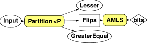
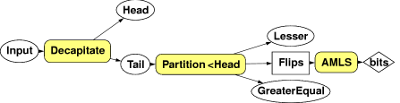
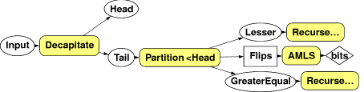
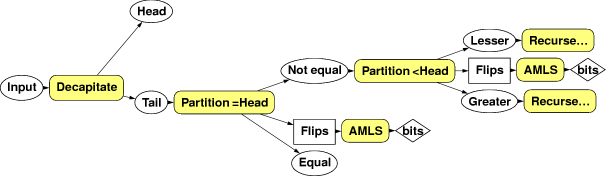

HotBits times the intervals between successive clicks of a Geiger counter facing a radioactive source, and converts those integers to random bits. HotBits uses a straightforward strategy for converting intervals to bits which produces 0.5 bits/sample. We present here a more sophisticated but still appealingly simple strategy which would yield up to 6.25 bits/sample; the output is provably unbiased and uncorrelated given only the assumption that each input sample is independently drawn from the same distribution.
Everyone knows that radioactive decay is truly random: whether or not a given nucleus will decay in the next second is entirely down to chance. If it doesn't decay this second, the chances that it'll do so in the next are exactly the same. If it survives another million years, it still has the same chance of decaying in the second following that; it doesn't "age". For the nucleus, every second is a game of Russian Roulette, and there are always the same number of bullets in the barrel. That's why you can't measure the "life" of a radioactive source - instead, we measure the "half-life", which is the time it takes before the chances it'll have decayed are 1/2 - or to put it another way, the time before half the nuclei in a given sample have decayed.
So it's an appealing source of random numbers - place a Geiger counter close to a radioactive source, and the "clicks" are randomly distributed. If the source is large enough and has a long enough half life, we can ignore its slow decay, and treat each "click" as an independent event - the probability of a click in the next millisecond is the same no matter what the history is.
Thus, whether or not there's a click during a given millisecond is an independent coin flip for each millisecond. However, it's the flip of a biased coin: if the source is cool, it's more likely to come down "tails" (no click) than "heads" (click). Fortunately, it's easy to turn a biased coin flip into an unbiased one: take the coin flips in pairs, and discard the pairs where both flips are the same. Then we rule that (H,T) = 0, (T,H) = 1 - if the flips are independent, each of these pairs is equally likely no matter how biased the coin is, so the bit we get out is guaranteed to be fair. This is known as the Von Neumann strategy
You can get rather more fair bits from your biased flips using a more sophisticated strategy. The Advanced Multi-Level Strategy or AMLS for short, developed by Yuval Peres, approaches a perfect way of doing such a conversion as the number of flips its given to process increases - it extracts close to every last drop of randomness from the flips it's given.
This strategy is very close to perfection for the circumstances described; unfortunately, there's a snag. The radioactive source may act like a nearly-perfect source of randomness, but the Geiger counter is an imperfect way of detecting it. Real Geiger counters take a while to recover after detecting each particle, so the probability it'll "click" during a given millisecond isn't constant, but depends on how long ago the last "click" was. Trying to model how this depends is a complex business, and an error in the model could mean imperfectly random output.
So from hereon in we'll make a much weaker assumption: we'll measure the intervals between clicks, and assume only that each interval is independently drawn from the same distribution.
HotBits uses a simpler strategy. It takes intervals in pairs; if T_0 < T_1, output 0, if T_0 > T_1, output 1, if T_0 == T_1, don't output anything. Then discard both samples and move on to comparing T_2 and T_3. This is guaranteed to produce true random bits under the assumption above, but it produces a little under 0.5 bits from each sample.
If we knew the median interval, we could do a little better: for each interval, if T < M, output 0, else output 1. This produces 1 bit/sample. However, measuring the median is an imprecise business like all statistical measurements, and if we get it wrong then our output will be biased.
AMLS solves this problem. We can pick an arbitrary "pivot" P, perhaps a rough guess at the median. Then if T < P, output Heads, else output Tails. This provides a sequence of coin flips that AMLS can use to generate truly random output, even if there's a bias in favour of H or T. If P is very close to the median, we'll generate very close to 1 bit/sample; if P is far from the median, we'll still get truly random bits, but fewer of them.

The very cheapest way to estimate the median is to use just one sample, the first in the sequence.

To get better than 1 bit/sample we use a strategy inspired by Quicksort, and based on the following observation. Take a sequence of samples independently drawn from the same unknown distribution. Discard all those less than (or greater than) some arbitrary M. What we're left with is a (perhaps) shorter sequence with just the same property - all the samples are drawn independently from the same distribution.
So we can apply the strategy above recursively. Break the sequence of intervals into "blocks" of hundreds to thousands of samples each. Pick the "pivot" P to be the first element in the block, and remove it from the block. Use P to generate Heads and Tails as described above - but as you do so, divide the remainder of the block into two shorter blocks, S_0 and S_1, where S_0 is all the elements < P and S_1 is those >= P. Use the Heads and Tails to generate random bits using AMLS as before. Then re-run the algorithm recursively over S_0 and S_1 to generate more random bits from the information about the samples you haven't used yet.

This works well, but it has one small problem familiar to Quicksort implementors. It will sometimes happen that the block it comes to match will simply be copies of the same element over and over again. When this happens, the algorithm performs very slowly, raking over the entire block over and over again removing one element at a time and producing no random bits as a result. So it's worth making the partitioning slightly more sophisticated. We partition twice: first into S_0 and S_1, where elements in S_0 = P and S_1 != P, generating coin flips as before. We then partition S_1 into S_2 < P and S_3 > P, producing a second sequence of coin flips which we feed to a separate instance of AMLS. Finally we recurse over S_2 and S_3. With care, both partitions can be performed in a single pass over the data. And the partition can be performed in-place, just like Quicksort.

I've implemented this strategy in C, and tested it against the distribution of intervals available to HotBits - a Gaussian distribution with mean 1889.35 and s.d. 26.4. With 65536-sample blocks, it produces 6.25 bits/sample, and on my machine (400 MHz K6) handles 300,000 samples/second. It is also space-efficient - apart from the storage of the random bits themselves, the majority of the auxiliary storage is used to store the block of samples before processing - a block size of 8192 samples requires 48K of storage; for a 65536 sample block, 382K is required.
Both the C implementation and a much simpler Python implementation are available under the liberal MIT license for any use whatsoever. Please let me know if you use this algorithm - thanks!